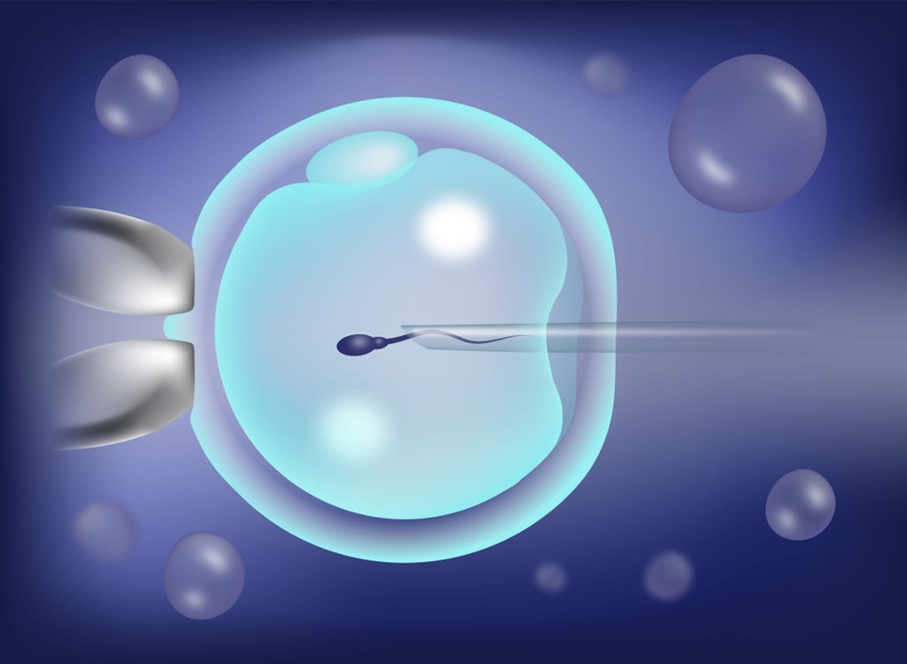
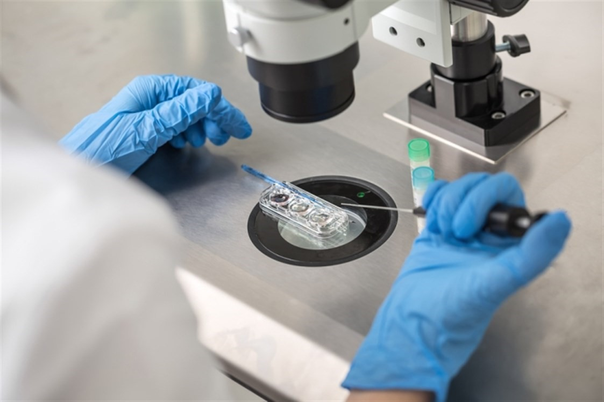

Treatment in Turkey
Turkey contains a large number of hospitals and huge medical complexes, in addition to plenty and distinctive Precision medicine, whether using robots or various medical mechanisms at reasonable costs.

The ICSI procedure & Stages in Turkey 2020
Intracytoplasmic sperm injection is a procedure through which the eggs are collected from the wife and the sperm from the husband, then one sperm is directly injected into each egg using a thin needle.
Table of content

What is ICSI?
ICSI is an in vitro fertilization procedure, in which a single sperm cell is directly injected into the egg. This technique is used to obtain embryos that can be transferred to the mother's uterus.
ICSI process in detail
The first step: Stimulating the ovaries
In the stimulation phase for ICSI, injectable drugs will be used for a period of approximately 8 to 14 days, to stimulate the ovaries to produce an egg.
The second step: Egg retrieval
In such cases, the doctor must perform the medical protocol, and make sure that the patient is ready for the operation, after that the doctor can perform the egg retrieval process.
It is also necessary to meet the anesthesiologist, to review the medical history, and to administer intravenous fluids before starting the operation to induce sleep.
The third step: Fertilization
After the egg is retrieved, the embryologist will do the third step, which depends on injecting a single sperm into each mature egg under a microscope. Therefore, preimplantation genetic diagnosis is possible, with very few sperms present.
The fourth step: Prenatal development
Prenatal (Fetal) development begins after fertilization. Since the embryos will be placed inside special embryoscopes after the initial fertilization, this will enable the embryos to continue to develop and grow without being disturbed at all.
The embryologist will examine each fetus over the next five to six days. The goal is to see the gradual development and transfer of the fetus to a stage that gives you the greatest chance for success.
The fifth step: Embryo transfer
Embryo transfer is a simple procedure that only takes about 5 minutes. Without anesthesia or recovery time, the nurse will take care of all matters related to, notifying you, and providing instructions on when to arrive and how to prepare.
Sixth step: Pregnancy test
This test is usually called a "beta" because it measures the beta-chain fraction of the human chorionic gonadotropin (HCG) hormone released by the developing fetus. Where the pregnancy test is done two weeks after the embryo transfer, and this test can be done at home, using the urinary pregnancy test, then you can inform us of the result, so that we can provide the appropriate advice.
things to do before icsi
Studies indicate that about one in eight women has difficulty conceiving. If you are one of them, and you have already made too many unsuccessful attempts for pregnancy, ICSI may be one of the procedures to consider.
In this article, we review your tips a month before the ICSI, as there will be several things that you need to take care of during this sensitive period, and here are some tips that will help you,
- Maintain a healthy diet, by following the following:
- Count on fresh fruits and vegetables.
- Choose lean protein, such as fish and poultry.
- Add legumes to your food, such as beans, chickpeas, and lentils.
- Switch to low-fat dairy products.
- Eat healthy fats, such as avocados, olive oil, nuts, and seeds.
- Avoid red meat, sugar, and processed foods.
- Abstain from salt and replace it with herbs.
- Stay physically active, try light jogging or hiking.
- Review your entire drug list with your doctor, and tell him/her about all medications, even those that seem familiar, like aspirin or painkillers.
- Take care of your mental health, ICSI is likely to be one of the difficult experiences in your life, but it will be easier if you do not allow it to control your thinking, throughout the preparation and during the procedure, so you should start by taking care of yourself early, this will not only help you manage some pain points better, but avoid it as well, and here are some tips to help you:
- Drink a lot of water.
- Get enough sleep and rest.
- Stock up on your favorite snacks.
- Get the help of your family and friends.
- Read a book.
icsi success rate 2020
Microscopic pregnancy is a delicate procedure, and all big and precise details must be taken into consideration to ensure its success, including:
- It is advised not to delay making an ICSI decision, because age is one of the most important factors that control the success or failure of ICSI.
- Conducting a diagnostic hysteroscopy before the ICSI, because it raises the success rates of the operation, and the endoscope identifies the problems that the uterus suffers from, and hinders the adhesion of the fetus to it, such as the uterine septum, or birth defects, and fibroids.
In addition to the fact that the procedure helps to wash the endometrium from the antibodies that attack the fetus, and according to the recommendations of the Royal College of England, the hysteroscopy helps to scratch the endometrium, which results in a kind of good inflammation, which increases the proportion of adhesion of the fetus.
- It is preferable for the embryo transfer to take place on the fifth day, not the third, because this is better for the nature of the uterus, explaining that in a normal pregnancy, the egg and the sperm meet in the fallopian tube, on the fifth day, also, the return of the embryo on the fifth day, helps adhesion Its cilia in the uterus, because the endometrium is prepared for this.
In Ilajak Medical, we follow the most accurate and best methods, to ensure the success of the ICSI procedure.
Tips for men before an ICSI
In the advice given to men before an ICSI, the husband may not bear the brunt of the ICSI procedure, but it is an equally important part of the procedure.
He will give the most important sample of sperm in his life, so there are several tips that he must adhere to:
- Avoid ejaculation during the three to four days before taking a sperm sample.
- Paying attention to his diet, sleep patterns, and self-care are also important.
- Stop smoking.
- Get enough sleep (at least seven to eight hours a night). Lack of sleep may affect testosterone levels and sperm quality.

Tips for pregnant women in the first month after an ICSI
In addition to the general advice that every pregnant woman should follow, whether the pregnancy is natural or not, there are some additional tips for ICSI pregnancy, especially in the first months, and they are as follows:
- Avoid dying or straightening hair with chemicals.
- Refrain from carrying heavy objects.
- Avoid climbing up and down the stairs quickly.
- Avoid taking medications on an empty stomach.
- Complete bed rest as much as possible.
- Make sure you start taking 0.4 mg of folic acid, as folic acid has been shown to significantly reduce many blemishes and abnormalities.
- Take vitamins and supplements.
- Light exercise, with doctor consultation.
- Eat healthy food, and avoid canned foods, which contain preservatives.
- Drink no less than 6-8 glasses of water daily.
- See a doctor periodically and immediately when feeling any strange symptoms.
Symptoms of successful ICSI
Waiting two weeks after an ICSI, for a pregnancy test, may seem like a very long time. So, some symptoms can appear during this period, as follows:
1. Light bleeding or spotting
Spotting or light bleeding is often the first sign of pregnancy.
2. Cramps
Contractions or cramps are one of the first signs that your period is on its way, and it may also be a sign of a successful embryo transfer.
3. Tender and Swollen breasts
An early sign of pregnancy, for some women, it may be a sign that the ICSI has been successful.
4. Fatigue
Feeling tired seems to be a normal part of pregnancy, from day one until delivery, but you may feel sleepier when your progesterone levels rise.
5. Nausea
Nausea or morning sickness usually begins in the second month of pregnancy, so it is not necessarily a symptom that you may notice in the two weeks following the embryo transfer.
6. Delayed menstruation
A late period can indicate pregnancy.
7. There are no symptoms
If after reading this list you realize that none of these symptoms apply to you, do not worry. Just because you did not have any of these specific symptoms, it does not mean that the ICSI was not successful.
So in this case the only way of confirmation is a pregnancy test.
icsi failure reasons
1. Anovulation or Poor ovulation
This means that the ovaries do not respond to stimulation drugs, and there are several reasons for the weak response, such as a lack of eggs in the ovaries.
2. Poor quality of eggs or sperm
One of the most important causes of failure is the poor quality of eggs or sperm, which constitute more than 75% of the causes of ICSI failure.
3. Embryos not attached to the uterus
There are many, many reasons why embryos cannot attach to the uterine wall. Among these reasons:
- Poor blood supply to the uterus.
- Antibodies, and their various effects.
4. The poor thickness of the lining of the uterus or the presence of defects in it
Among the defects that can occur, for example, the presence of the uterine septum or adhesions to the uterine cavity, as well as the presence of polyps, in addition to the poor thickness of the membrane, which must be diagnosed and treated.
5. Hydrosalpinx
It is the complete obstruction of the fallopian tubes, with transparent or clear fluid.
The blocked tube may become noticeably swollen.
The condition is often on both sides, and the tubes affected can be several centimeters in diameter. the clogged tubes cause infertility.
The difference between IUI and ICSI
The main difference between IUI and ICSI is: How does a sperm fertilize an egg? The answer to that will be in the following points:
- In IUI, it is one of the simplest and affordable methods of conceiving, as the sperm is placed directly in the uterus, at the time of ovulation, to produce a fertilized egg.
- In ICSI, it is a laboratory procedure in which a single sperm is directly injected into the egg.
Questions about ICSI
Is ICSI painful?
The operation depends on sufficient sperm collection, which can be performed naturally or surgically. Sperm is usually collected by regular ejaculation. For men who have previously had a vasectomy, a Vasectomy reversal may be required first to restore fertility.
The procedure allows a fertility specialist to obtain sperm from the testicles, using a fine needle. Although needle aspiration is a straightforward procedure performed under anesthesia, it poses a slight risk of pain and swelling. In most cases, this results in minimal discomfort.
Is it possible to travel after an ICSI?
If you wish to travel, we recommend that you wait until the next day of the operation.
Because the ICSI procedure itself is simple, and there is no downtime required.
In ICSI, For how many days stimulation injections are used?
The stimulation phase involves injecting drugs for 8-14 days, to stimulate the ovaries to produce many eggs. And the stimulation phase takes longer if the ovarian follicles are maturing slowly.
What is the success rate of ICSI?
The most important indicator of ICSI success appears to be the fertilization rate, achieved with the ICSI procedure.
Currently, the fertilization rate is 85 percent.
When it is possible to repeat the ICSI procedure?
We recommend avoiding ICSI cycles in the following months.
The best is to take at least a month off, after an ICSI cycle, before embarking on another new cycle of ICSI.
Is constipation a sign of successful ICSI?
Constipation is a common early symptom of pregnancy. The increase in progesterone causes food to pass more slowly through the intestine, which can lead to constipation.

Ilajak Medical© | A passion for care
Source: Glasgow Royal Fertility Clinic
Latest Articles, Health News, Clinical Research, and more.
Keratoconus and cataracts , symptoms and types
What is Keratoconus, How it looks and what are the symptoms? Also, find out Keratoconus’s types and stages , Learn more with ILAJAK Medical.
Best Spa Resorts with Medical Services clinics in Turkey.
In this article, we will learn about the importance of health resorts and the treatment services they offer and the top and famous health & medical resorts in Turkey
Zirconia teeth type and costs in Turkey 2021
Zirconia dental crowns and bridges are used to treat and protect the affected teeth due to decay or fractures, etc, In this article we will learn about the advantages and drawbacks of Zirconia Crowns and bridges
Benefits of porcelain teeth and costs in Turkey 2021
Porcelain crowns and veneers are used to strengthen and protect damaged teeth due to decay or cracks or any other reason. In this article, we will discover dental porcelain and its advantages and risks.